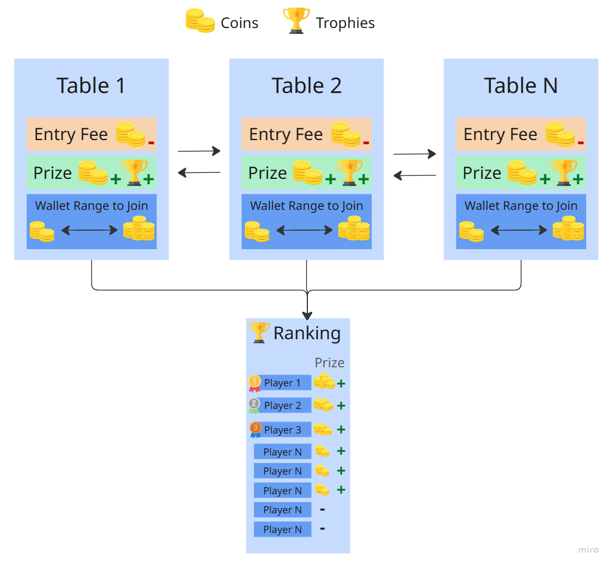
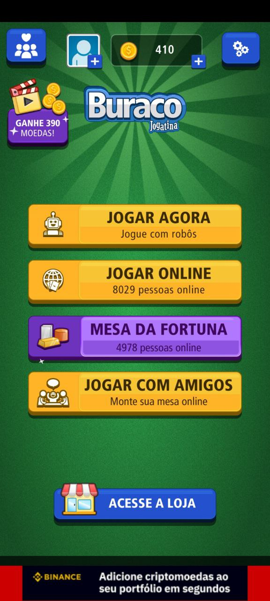
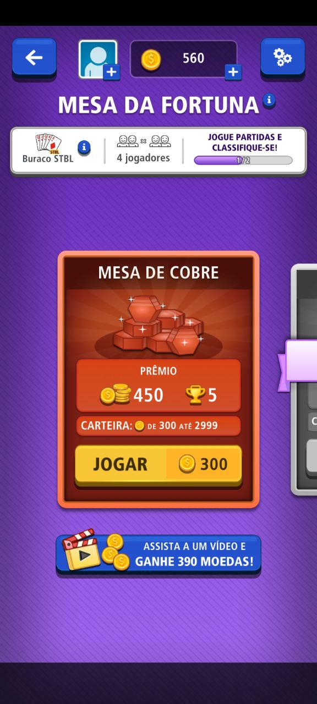
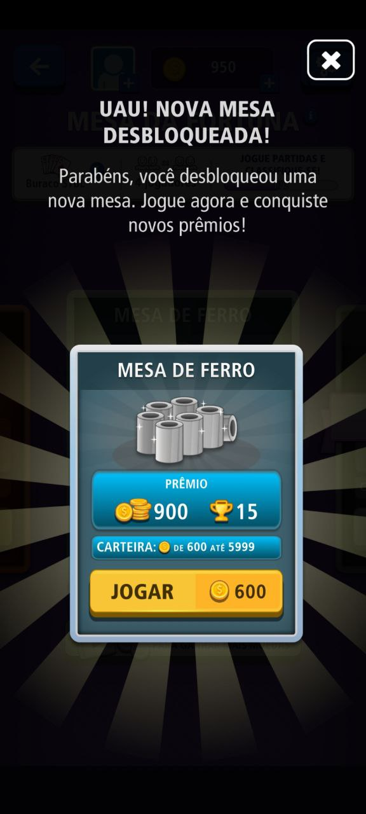
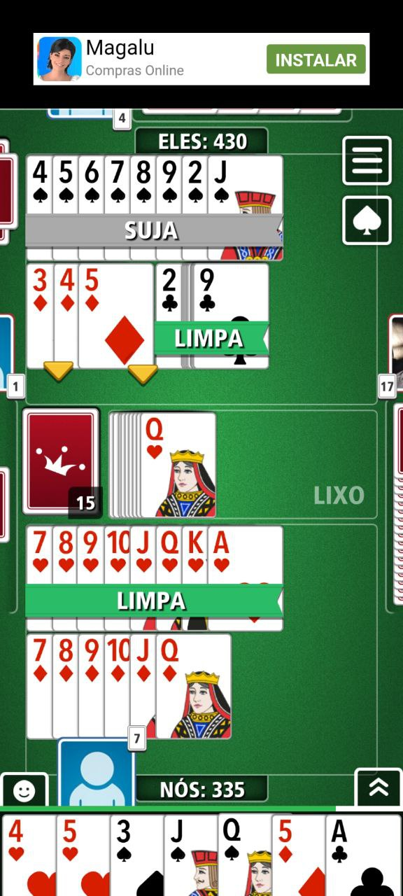
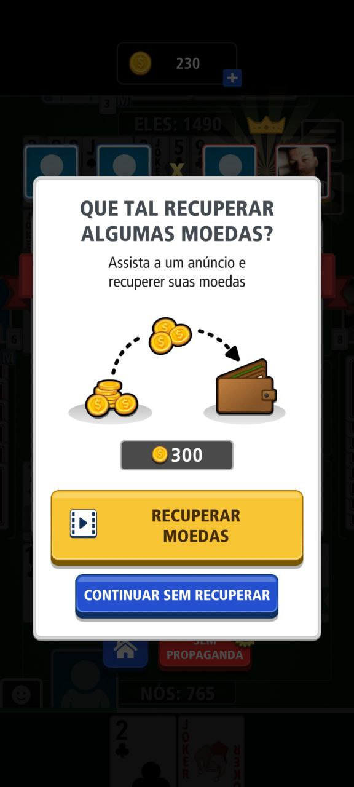
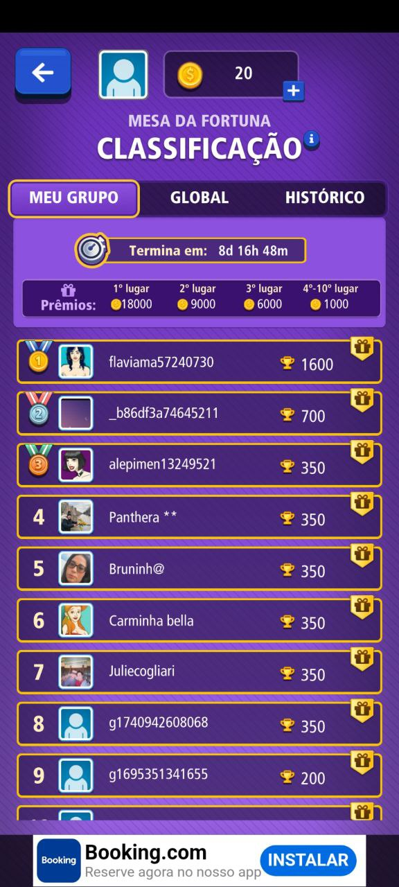
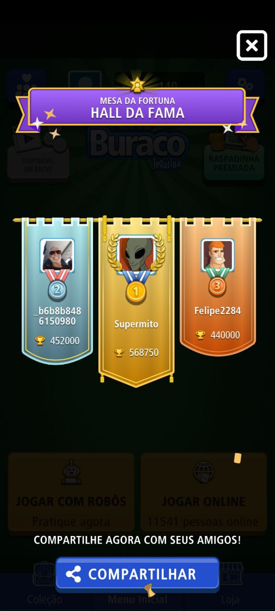

Buraco Jogatina
- StudioGazeus Games
- RoleSenior Game Designer
- PlatformAndroid / iOS
Project Overview
Buraco Jogatina is a large-scale Buraco game played by millions of players — a classic card game where players compete in 1v1 or 2v2 matches, forming sequences and getting rid of their hands.
The audience for Buraco Jogatina is almost entirely Brazilian and generally 50+ years old.
In this project, I took on the role of the company’s senior game designer, mentoring and collaborating with the project’s dedicated designer on a number of new features and monetization strategies.
My Responsibilities
- Mentoring and collaborating with Buraco’s dedicated designer in an ambitious effort to restructure the game’s monetization strategy, from interstitial ads only to rewarded videos (RVs) and IAPs (more details below).
- Analyzing data and contributing to strategy discussions.
Key Results
- ARPDAU: +22.2% (2023) and +6.3% (2024)
- Active Subscribers: +9.8% (2023) and +5.6% (2024)
- Successfully diversified the game’s monetization by introducing recurring rewarded videos and IAPs without driving away the existing playerbase.
Project Highlights
Multi-Table Progression
Among many different systems built for Buraco Jogatina, I was particularly involved in designing a multiplayer progression system called Fortune Table.
In this system, players compete and advance through multiple “tables”, each with their own entry fees and victory payouts — all with in-game currency.
Higher tables also grant more trophies, which in turn feed a Ranking system. At the end of a season, trophies are reset and players are awarded currency according to their position in the leaderboards.
It’s a cyclical system, and it’s very effective in keeping the game economy healthy and allowing for recurring RVs and IAPs without the need for a content production treadmill.

Screenshots






